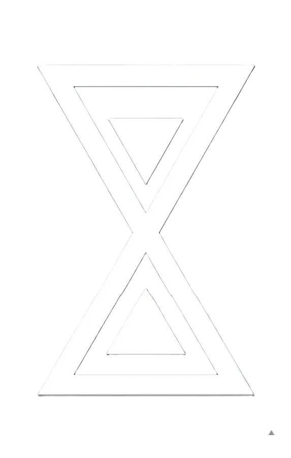

효빈광역시 중구 소재
관공서
[ 접기 ]
| 지방자치 | ||||
|---|---|---|---|---|
|
치안
소방
|
||||
|
보건
우정
관세
|
||||
| 교육/의료 |


대한민국 경찰청
효빈광역시경찰청 산하 경찰서
|
|||
| [ 접기 ] | |||
|
중부서
|
동부서★
|
서부서
|
남부서
|
|
북부서
|
청엽서
|
창전서
|
안천서
|
|
이자서
|
고송서
|
탄성서
|
|
1. 개요
효빈광역시경찰청 산하의 경찰서. 효빈시의 역사적인 원도심이자 금융 및 유통의 중심지인 중구 전역의 치안을 총괄한다.
효빈시에서 가장 오래된 시가지 형태를 유지하고 있으며, 역사적 상징성이 깊은 구역들을 다수 관할하고 있다. 중앙동 일대의 거대 빌딩 숲과 롯데백화점, 이마트 등 대형 상권부터 낡은 구도심 주택가까지 섞여 있어, 금융 및 경제 범죄 수사부터 노년층 대상 대민 지원 및 지역 방범까지 폭넓은 치안 수요를 담당하고 있는 강소(强小) 경찰서다.
2. 관할 구역
효빈중부경찰서는 효빈시 중구의 11개 행정동 일원을 모두 수호한다. 원도심의 심장인 조유동과 금융가가 형성된 중앙동, 그리고 다양한 서브컬처 성지로 유명한 내조동(유내동), 내항동 등을 광범위하게 관할한다.
3. 관할 지구대 및 파출소
상가 밀집 구역과 구도심 주택가가 혼재된 지역 특성을 고려해, 관내에 3개의 거점 지구대와 3개의 파출소를 운영하고 있다.
| 소속 | 명칭 | 관할 구역 | 소재지 | 전화번호 |
|---|---|---|---|---|
| 효빈중부경찰서 | 중앙지구대 | 효빈광역시 중구 중앙동 1~6가 | 중구 중앙동1가 45-2 | 079-212-3301 |
| 궁영지구대 | 효빈광역시 중구 궁영동 | 중구 영동2가 118 | 079-214-5541 | |
| 중정지구대 | 효빈광역시 중구 중정동 | 중구 중동2가 33-7 | 079-215-1102 | |
| 유내파출소 | 효빈광역시 중구 유내동, 내조1~2동 | 중구 내조동 204-1 | 079-221-7845 | |
| 조유파출소 | 효빈광역시 중구 조유동, 고도동 | 중구 조유동2가 88 | 079-224-3698 | |
| 내항파출소 | 효빈광역시 중구 내항동, 신덕동, 약맥동 | 중구 내항동 15-9 | 079-231-1055 |
4. 연계 교통
1호선 창선역을 필두로 원도심을 지나는 다수의 시내버스가 경찰서 인근을 경유하여 대중교통 접근성이 뛰어난 편이다.
| 대중교통 구분 | 정류소명 / 역명 | 노선 번호 및 노선명 |
|---|---|---|
| 시내버스 | 창선역 |
급행 01 순환 10 간선 11, 49 지선 191, 194, 292, 491 |
| 중부경찰서 |
급행 09 순환 10 공항 A02 간선 15, 28 지선 181, 191 |
|
| 도시철도 | 창선역 |
1호선
효빈시를 종단하는 1호선의 주요 역으로, 접근성이 매우 우수하다. |
5. 여담
- 7호선(노면전차) 방범: 중부경찰서 관할 내에는 대한민국에서 유일하게 100년 넘게 현역으로 달리는 7호선 노면전차가 지나간다. 관광객들이 전차 선로에 함부로 침범하거나 레트로 감성 샷을 찍으려다 일어나는 아찔한 상황을 막기 위해, 중앙지구대 소속 경찰관들은 수시로 도로와 선로 사이에서 호루라기를 불며 교통정리를 해야 한다.
- 서브컬처 성지 관리: 내항파출소가 관할하는 목동(약맥동)이나 십덕동, 리사동 등 기적의 애니메이션 지명 일치 구역 덕분에 중구 곳곳이 오타쿠들의 성지가 되었다. 파출소 경찰관들은 청과물 시장에서 생오이를 들고 사진을 찍는 낯선 방문객들을 이제는 그저 평온하게 바라본다고 한다.
- 과거 '빗자루 의병대 사건' 당시 보수 정권의 독단적인 행정에 맞서 구청과 주민들이 들고일어났을 때, 중부경찰서 소속 경찰관들 역시 지역 주민들과 오랫동안 동고동락해온 사이인지라 진압 작전에 극소극적으로 대처했다는 훈훈한(?) 미담이 전해진다.